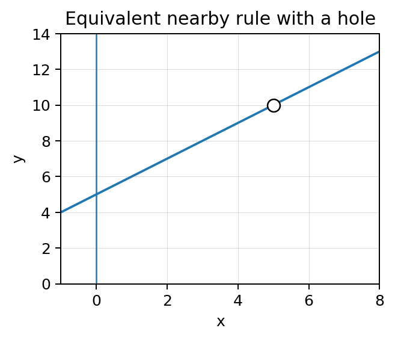

First substitute. If the form is indeterminate, let the structure tell you what to do next.
Section Introduction
An indeterminate form is a signal, not an answer
Algebraic limit work should begin with direct substitution. If substitution gives an ordinary real number and the operations are valid, the limit is usually complete.
If substitution gives \(0/0\), the limit has not been evaluated. The expression may contain a removable factor, a radical that can be rationalized, or a trigonometric structure that calls for a known limit or squeeze argument.
Good algebraic limit work is therefore strategic: identify the form, choose a structure-preserving rewrite, and substitute only after the obstruction has been removed.
Do not do extra algebra before you know you need it—and do not stop when \(0/0\) tells you to keep going.
Vocabulary / Key Notation Preview
direct substitution · limit laws · factoring · conjugate · Squeeze Theorem
Sort the vocabulary. Write each vocabulary word in the column that best matches what you know right now. You may move a word later.
| Know for sure | Recognize | Don't know yet |
|---|---|---|
Section Preview
Skim before close reading. Look at the headings, tables, graphs, and examples. Find 1–2 things you notice and 1–2 things you wonder about.
| What I noticed | |
|---|---|
| What I wonder |
Close Reading Directions
READ IN SHORT CHUNKS. Annotate the words and visuals together. Underline evidence, circle or highlight bold vocabulary, label arrows or important features, connect sentences to tables and graphs, and jot short questions or connections in the margins. Use these directions through the What's To Come section and the reading that follows.
What's To Come
PREVIEW / DECOMPOSE. Use the connected parts to see where this section is headed. Annotate the representations and prompts as you work.
Use the single limit \(\displaystyle \lim_{x\to5}\frac{x^2-25}{x-5}\) for Parts A–D.

Part A
What does direct substitution produce? Explain why that result is not the limit value.
Part B
Rewrite the expression for \(x\ne5\) by factoring and simplifying.
Part C
Evaluate the limit using the simplified nearby expression.
Part D
Explain why the original expression can be undefined at \(x=5\) while the limit still exists.
I Can 1I can evaluate limits algebraically using direct substitution, limit laws, factoring, conjugates, and appropriate trigonometric or squeeze reasoning.
Start with direct substitution. For polynomials and many combinations of continuous functions, substitution gives the limit immediately. Limit laws justify combining limits when the component limits and operations are valid.
If substitution produces \(0/0\), choose a rewrite. Factoring can expose a common factor. A conjugate can remove a radical difference. Standard trigonometric limits such as \(\lim_{x\to0}\frac{\sin x}{x}=1\) can be used when the expression can be arranged into the needed form.
The Squeeze Theorem is appropriate when a function is trapped between two functions with the same limit. The method should match the structure; there is no benefit in forcing every limit through the same algebraic routine.
Direct substitution
Use when substitution gives a defined value.
Example form: \(\lim_{x\to2}(x^2+3x)\)
Factor / cancel
Use when \(0/0\) hides a removable factor.
Example form: \(\frac{x^2-a^2}{x-a}\)
Conjugate
Use for a radical difference that yields \(0/0\).
Multiply by the matching radical sum.
Trig / squeeze
Use a known trigonometric limit or squeeze structure when appropriate.
\(\lim_{x\to0}\frac{\sin x}{x}=1\)
The form after substitution tells you whether the limit is finished or which strategy to consider.
Example 1: Evaluate a two-method mini-set
Evaluate both limits. Show the algebraic method that makes each limit evaluable.
- \(\displaystyle \lim_{x\to4}\frac{x^2-16}{x-4}\)
- \(\displaystyle \lim_{x\to0}\frac{\sqrt{9+x}-3}{x}\)
You Try It 1: Use the same two-method architecture
Evaluate both limits. Identify the method before carrying it out.
- \(\displaystyle \lim_{x\to6}\frac{x^2-36}{x-6}\)
- \(\displaystyle \lim_{x\to0}\frac{\sqrt{16+x}-4}{x}\)
Stop and Discuss
- What is the first move on most algebraic limits?
- What does \(0/0\) tell you—and what does it not tell you?
- How does expression structure help you choose between factoring and a conjugate?
I Can 2I can select an algebraic method for a limit form.
Method selection begins by classifying the result of direct substitution. A defined number usually ends the problem. An indeterminate form means that the original expression is hiding useful nearby structure.
Look next at the expression itself. Polynomial differences often factor. Radical differences often rationalize. Trigonometric expressions may be rearranged to use a standard limit. A product trapped between two expressions may suggest squeeze reasoning.
A strong solution communicates why the method fits. On AP-style work, the algebra should make the limiting behavior clearer, not merely produce a final number.
- Substitute the target.
- If you get a defined value, stop.
- If you get \(0/0\), inspect the structure.
- Polynomial factor? Factor/cancel.
- Radical difference? Conjugate.
- Recognizable trig or bounded product? Use the appropriate known limit or squeeze reasoning.
- Substitute again after the valid rewrite.
Example 2: Choose before solving
For each limit, name the most natural first strategy after direct substitution. Do not fully solve.
- \(\lim_{x\to3}(x^2+4x-1)\)
- \(\lim_{x\to2}\frac{x^2-4}{x-2}\)
- \(\lim_{x\to0}\frac{\sqrt{25+x}-5}{x}\)
- \(\lim_{x\to0}\frac{\sin(4x)}{x}\)
You Try It 2: Select methods on fresh forms
Name the most natural first strategy after direct substitution.
- \(\lim_{x\to-1}(2x^3-x+7)\)
- \(\lim_{x\to5}\frac{x^2-25}{x-5}\)
- \(\lim_{x\to0}\frac{\sqrt{4+x}-2}{x}\)
- \(\lim_{x\to0}\frac{\sin(7x)}{x}\)
Stop and Discuss
- Why is method choice part of the mathematics rather than just a formatting choice?
- Which visible feature most strongly suggests using a conjugate?
I Can 3I can compare two valid algebraic approaches to the same limit.
Two valid algebraic approaches can lead to the same limit because they preserve the same nearby function behavior. Comparing approaches helps you see which transformations are essential and which are optional.
For example, an expression can sometimes be expanded first or factored first. If both routes produce equivalent expressions for inputs near the target and both lead to the same limiting value, both are valid.
The comparison should focus on mathematical validity, clarity, and efficiency. A shorter path is often preferable, but a longer correct path can still reveal useful structure.
Route A: factor
\(\frac{x^2+4x}{x}=\frac{x(x+4)}{x}=x+4\), for \(x\ne0\).
Route B: split
\(\frac{x^2}{x}+\frac{4x}{x}=x+4\), for \(x\ne0\).
Both routes are valid because they produce the same nearby expression and preserve the limit.
Example 3: Compare two valid routes
Evaluate \(\displaystyle \lim_{x\to0}\frac{x^2+6x}{x}\) in two ways: (1) factor first and (2) split the quotient into two terms. Compare the routes.
You Try It 3: Compare expansion and factoring
Evaluate \(\displaystyle \lim_{x\to2}\frac{x^2+x-6}{x-2}\). Show a factoring route, then explain why trying direct substitution alone is insufficient.
Stop and Discuss
- What must two valid approaches preserve about the function near the target?
- When is a shorter method preferable even if a longer method is correct?
Vocabulary Reference
| Term | Meaning in this section |
|---|---|
| direct substitution | Replacing the input by the target value to test whether the limit evaluates immediately. |
| limit laws | Rules for combining limits when the component limits and operations satisfy required conditions. |
| factoring | Rewriting a polynomial to expose factors that may cancel for nearby inputs. |
| conjugate | A paired radical expression used to rationalize a difference or sum involving radicals. |
| Squeeze Theorem | If a function is trapped between two functions that approach the same limit, the trapped function has that limit as well. |
Section Summary
- Begin algebraic limits with direct substitution.
- A defined substitution value often completes the limit.
- The indeterminate form \(0/0\) signals a need to rewrite; it does not mean DNE.
- Choose factoring, conjugates, trigonometric limits, or squeeze reasoning from the expression structure.
- Different valid rewrites can preserve the same nearby behavior and produce the same limit.
What I Understand Now
Choose one algebraic limit strategy from this section and explain what structural clue tells you to use it. Then explain one mistake you now know to avoid when direct substitution produces \(0/0\).
Common Mistakes to Watch
| Mistake | What to remember |
|---|---|
| Stopping at \(0/0\). | Indeterminate means simplify or use another valid method. |
| Doing algebra before substituting. | Direct substitution may already finish the problem. |
| Canceling terms instead of common factors. | Only factors can be canceled legitimately. |
| Using a conjugate without multiplying numerator and denominator. | Preserve equivalence by multiplying by a form of 1. |
| Applying a named theorem or standard limit without matching its structure. | Show the rewrite that places the expression into the required form. |